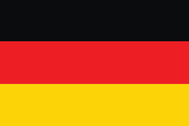
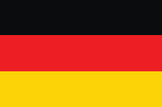

| Pais | Bandeira |
|---|---|
| Canadá |  |
| Alemanha |  |
| Japão |  |
Me chamo Kayck, tenho 19 anos e sou do Rio de Janeiro, capital. Cursando Engenharia de Software e sou formado em Técnico em Informática pela FAETEC. Tenho experiência com desenvolvimento web (HTML, CSS, JavaScript, PHP, MySQL) e já criei projetos como um sistema escolar e um e-commerce para a marca Kyo.
Me interesso por tecnologia, animais e jogos, e busco sempre aprender mais e crescer na área de TI.
| Pais | Bandeira |
|---|---|
| Canadá | |
| Alemanha |  |
| Japão | |